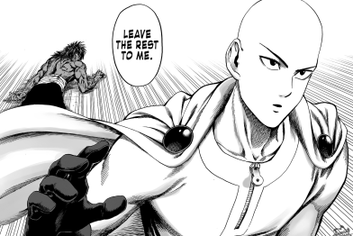

Click this pic for a link to my anime list
Click this pic to go back to ABOUT ME

My favorite kind of TV show is anime. Anime consists of many different genres, and has been popular since the 1950s!
...and many others! I would say though, a defining feature of most of the entertainment that I tend to be be drawn towards is ones with the most dynamic characters. To be able to really enjoy a show, I want to be able to understand them and empathize with them. A character truly makes up a great plot.
God there's too many. A lot of these characters I've come to truly understand by rewatching or rereading their story, giving them another chance to look awesome! The second read is always the most interesting one :)